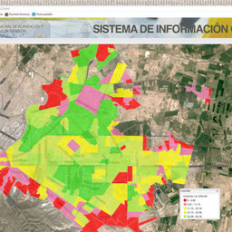
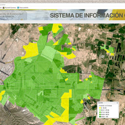
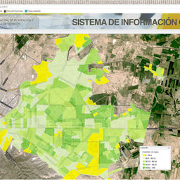
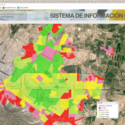
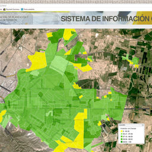
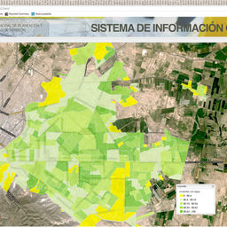
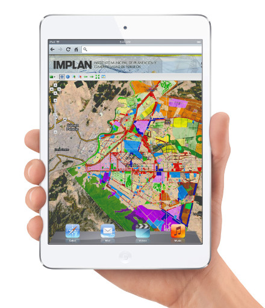
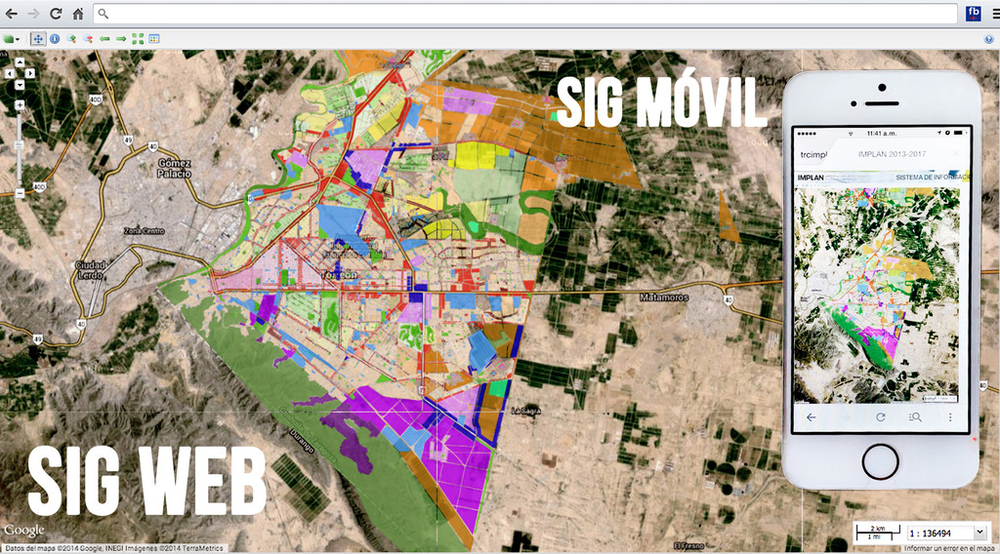

En las últimas décadas las tecnologías de información y comunicación han revolucionado el desarrollo, implementación, almacenamiento y distribución de la información utilizando diferentes medios. Los Sistemas de información Geográfica (SIG) como bases de datos georeferenciadas que se reflejan en mapas digitales, han evolucionado rápidamente ligados al crecimiento de las tecnologías de la información, ofreciendo e integrando cada vez más aplicaciones técnicas para la gestión y procesamiento de los datos espaciales en el software.
Los SIG ofrecen una gran variedad de utilidades y aplicaciones relacionadas con los trabajos específicos de ordenamiento urbano y planificación territorial, facilitan el procesamiento y la integración de la información, en particular ayudan a realizar análisis con diferentes hipótesis, o aspiraciones, y crear escenarios futuros.
Teniendo la información, se generan los mapas, como principal representación gráfica en diversos formatos. Para la producción de mapas se necesita que la información cartográfica este actualizada, para la descripción, evaluación y diseño.
Actualmente los medios electrónicos son cada vez más baratos, por lo cual es más sencillo ver proyectado un mapa en una pantalla a verlo en papel, un mapa aclara enormemente la situación territorial, homogeneiza el conocimiento, permite plantear alternativas con mucha mayor flexibilidad, para que todo esto sirva para la toma de decisiones. Actualmente se trabaja con las diferentes dependencias para recaudar la información necesaria y lograr un resultado eficiente y eficaz, para poder emitir un diagnóstico de la ciudad, así mismo trabajar en planes programas y proyectos futuros.
 





{kind=link}
{kind=link}
{kind=link}
Debido al avance de la tecnología se busca implementar el SIG como herramienta de consulta en una plataforma móvil (SIG MOVIL), que se brinde en acceso libre a la población, lo único que se necesitará para poder acceder a esta plataforma seria:
- Dispositivo móvil.
- Acceso inalámbrico a Internet.
Las comunicaciones inalámbricas y la computación móvil lucen como tecnologías claves en siglo 21. Con más de 4 billones de suscriptores de celulares (ITU 2009), han ganado la aceptación mundial con una velocidad que ha superado a muchas otras innovaciones técnicas. La proliferación de los teléfonos celulares y otros dispositivos móviles, junto con la necesidad fundamental de la sola conveniencia, ha dado lugar a la proliferación de los SIG móvil. Es decir SIG en dispositivos móviles.
Es importante introducir los SIG móviles en el contexto de los SIG WEB. Los SIG móviles emergen a mediados de la década de los 90, para cubrir las necesidades del trabajo de campo como relevamientos y mantenimiento de redes de infraestructura. Estos sistemas inicialmente operaban principalmente en modo desconectado. Pero con el avance radical en las comunicaciones inalámbricas, especialmente las que operan en redes 3G, los SIG móviles están conectados crecientemente a la WEB, y los hace parte de los SIG WEB. Los SIG móviles pueden actualizar a los servidores con la última información desde el campo. Los servidores WEB pueden, a su vez, proveer apoyo a los SIG móviles con su rico contenido y análisis avanzado.
Con esto se pretende poder tener un mejor panorama de la ciudad, poder generar diagnósticos y planes a largo plazo y a su vez mantener a la población bien informada.